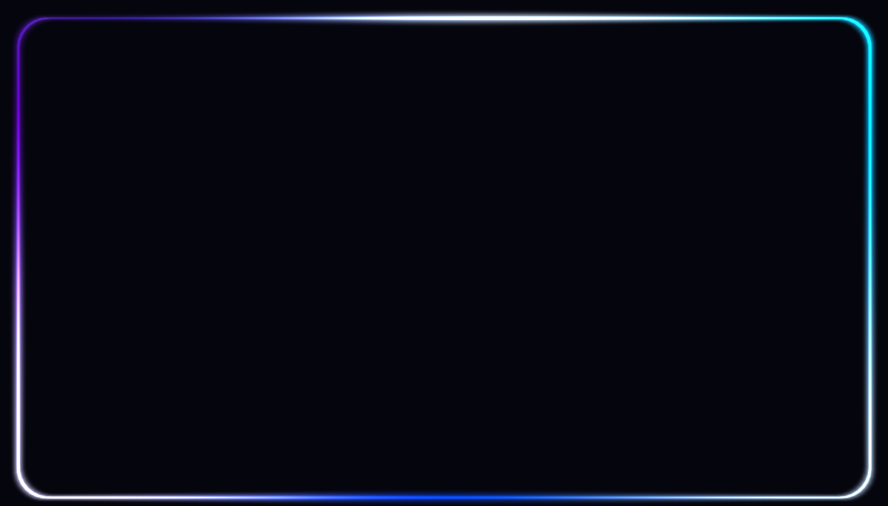
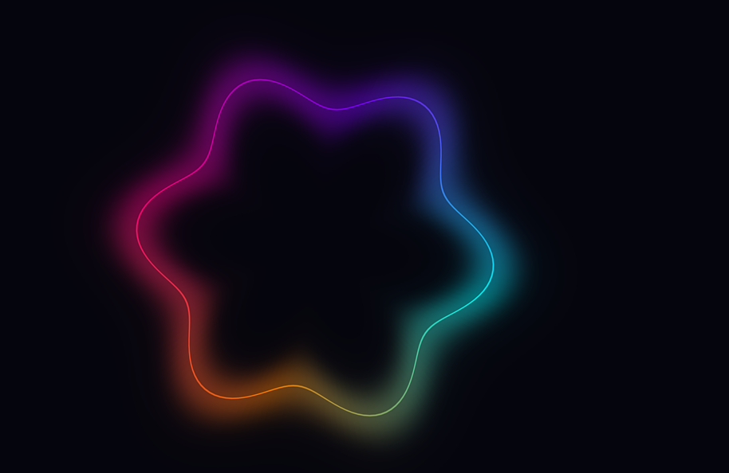
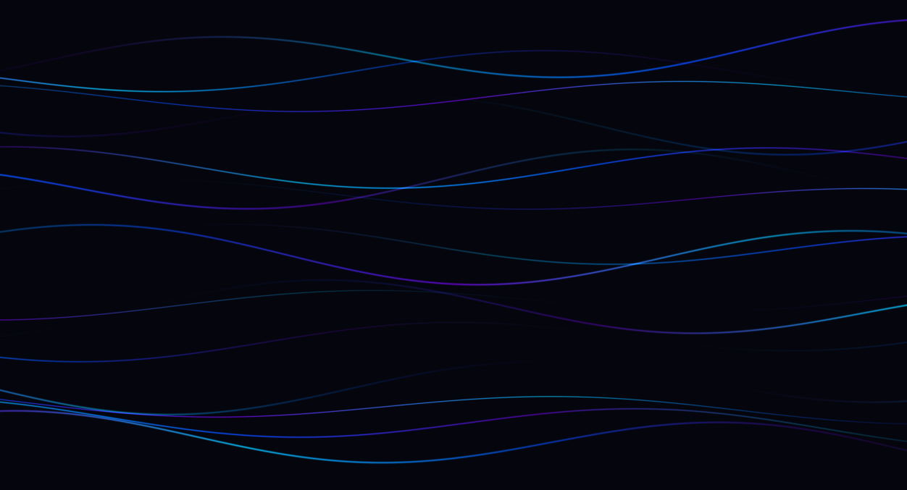
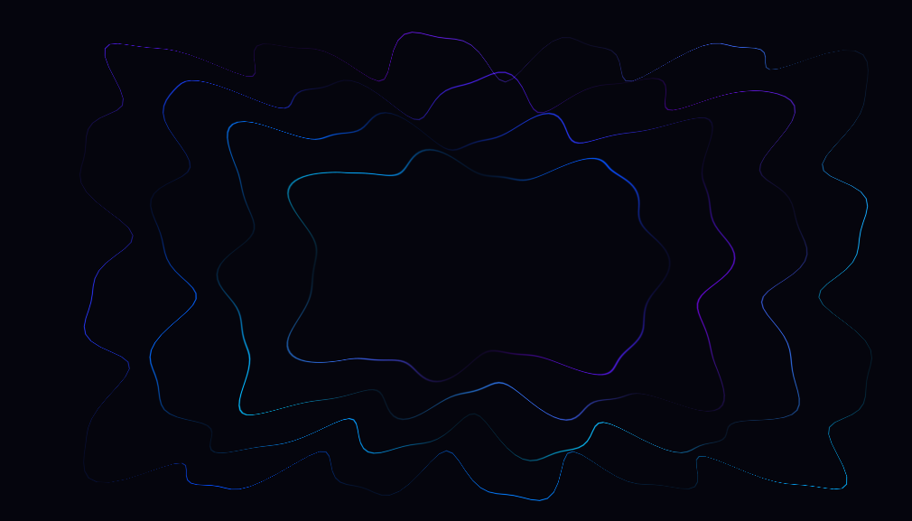

Edge Pulse Effect
OpenGL 3.3 real-time animation system — architecture & visual guide
Overview
The system renders GPU-accelerated animations using a CPU-side geometry generation pattern:
vertex data is rebuilt each frame in update(), uploaded to the GPU via glBufferData,
then drawn in render(). All effects share the same line.vert / line.frag shader pair.
Render Pipeline
Each frame follows this sequence:
while (!glfwWindowShouldClose) {
glClear()
manager.update(dt) // advance sim, rebuild geometry
│ EdgePulseEffect.buildLineGeometry()
│ NeonWaveRingEffect.buildRingGeometry()
│ MagneticWaveEffect.buildWaveGeometry()
│ MagneticRectangleEffect.buildDisplacedGeometry()
manager.render() // bind state + draw
│ [per effect]
│ glEnable(GL_BLEND)
│ shader.use()
│ set uniforms (uProjection, uAlphaScale)
│ set blend func
│ glDrawArrays(GL_TRIANGLE_STRIP)
glfwSwapBuffers()
}Blend Modes
| Mode | Function | Used By |
|---|---|---|
| Standard alpha | GL_SRC_ALPHA, GL_ONE_MINUS_SRC_ALPHA | Core lines (EdgePulse, NeonWaveRing core) |
| Additive | GL_SRC_ALPHA, GL_ONE | Glow overlays, MagneticWave, MagneticRectangle |
Screenshots
Actual OpenGL output for each effect running at 1280×720.




EdgePulseEffect
Notification-style edge pulse: a thin coloured core line tracing a rounded rectangle, with a wider glow overlay that activates on notification.
Layer Stack
Notification Animation Flow
// Each frame in update():
shakeIntensity *= 1.0 - 4.0 * dt // decays to 0 in ~4s
pulseIntensity *= 1.0 - 1.2 * dt // decays to 0 in ~2s
// In render() when pulsing:
glBlendFunc(GL_SRC_ALPHA, GL_ONE); // additive blend
uAlphaScale = 0.6 + pulseIntensity * 0.4;
// Screen shake:
proj = translate(proj, vec3(
sin(time * 137) * shake * 0.5,
sin(time * 251) * shake * 0.5, 0));Gradient Color Animation
The colour cycles along the perimeter and shifts over time:
shiftedT = fmod(t + time * 0.06, 1.0)
stops:
0.00 → cyan (0.0, 0.8, 1.0)
0.33 → blue (0.0, 0.3, 1.0)
0.66 → purple(0.4, 0.0, 0.8)
1.00 → cyan (0.0, 0.8, 1.0)
When pulsing (pulse > 0.01):
flash = pulse * (0.5 + 0.5 * sin(t * 20 + time * 10))
col = mix(col, white, flash * 0.6)
alpha = min(alpha + flash * 0.3, 1.0)NeonWaveRingEffect
A neon glowing wave ring: circular ribbon with sine-wave radial displacement, rendered in 3 layered passes for a neon glow effect.
Layer Stack
Wave Displacement
for each point around circle:
angle = t * 2 * PI
wave = amplitude * sin(angle * waveCount + elapsedTime * speed)
radius = baseRadius + wave
pos = (radius * cos(angle), radius * sin(angle))
normal = (cos(angle), sin(angle)) // radial outward
offset = normal * lineWidth / 2
// Two vertices per segment (inner + outer edge of ribbon)
vertex[0] = pos + offset (vUV.y = +1)
vertex[1] = pos - offset (vUV.y = -1)Gradient
5-stop gradient cycling around the ring, shifting over time (elapsedTime * 0.05):
cyan (0.0, 1.0, 1.0) → purple (0.5, 0.0, 1.0) → pink (1.0, 0.0, 0.5)
→ orange (1.0, 0.5, 0.0) → cyan (0.0, 1.0, 1.0)MagneticWaveEffect
Multiple horizontal sine-wave lines with additive blending, producing a neon magnetic-field visual.
Wave Geometry
for each wave line:
y = lineIndex * spacing - halfHeight
for each x segment:
displacement = amplitude * (
sin(x * freq1 + time * speed) +
sin(x * freq2 + time * speed * 0.7))
posY = y + displacement
// Two vertices (vertical thickness = lineWidth)
vertex[0] = (x, posY + halfWidth, u, +1, color)
vertex[1] = (x, posY - halfWidth, u, -1, color)Each wave line is drawn as a separate glDrawArrays(GL_TRIANGLE_STRIP) call with additive blending for a glowing overlap effect.
MagneticRectangleEffect
A rounded rectangle whose perimeter points are displaced outward/inward by a composite sine wave, creating a breathing magnetic contour effect.
Displacement Logic
for each point along perimeter:
pp = perimeter.getPointAtDistance(dist)
wave = amplitude * (
sin(dist * freq1 + time * speed) +
sin(dist * freq2 + time * speed * 0.7))
pos = pp.position + pp.normal * wave
offset = pp.normal * lineWidth / 2
vertex[0] = pos + offset
vertex[1] = pos - offset
The effect creates its own Perimeter internally each frame, samples it,
applies wave displacement along the normal, and renders as a single triangle strip
with additive blending.
Shader System
All effects share the same vertex and fragment shaders.
line.vert
#version 330 core
layout(location = 0) in vec2 aPos; // position
layout(location = 1) in vec2 aUV; // (progress t, ±1 across width)
layout(location = 2) in vec4 aColor; // per-vertex RGBA
out vec2 vUV;
out vec4 vColor;
uniform mat4 uProjection;
void main() {
gl_Position = uProjection * vec4(aPos, 0.0, 1.0);
vUV = aUV;
vColor = aColor;
}line.frag
#version 330 core
in vec2 vUV;
in vec4 vColor;
out vec4 FragColor;
uniform float uAlphaScale;
void main() {
float dist = abs(vUV.y); // 0 at center, 1 at edge
float alpha = 1.0 - smoothstep(0.0, 1.0, dist); // soft falloff
FragColor = vColor * alpha * uAlphaScale;
}
The vUV.y coordinate ranges from -1 (inner edge)
to +1 (outer edge) across the strip width.
The fragment shader uses smoothstep to create a
Gaussian-like soft edge, giving the line a smooth glow appearance.
uAlphaScale controls the overall opacity (used for glow dimming).
Vertex Data Layout
| Location | Attribute | Type | Offset | Purpose |
|---|---|---|---|---|
| 0 | aPos | vec2 | 0 | Screen-space position |
| 1 | aUV | vec2 | 8 | .x = perimeter progress [0..1], .y = ±1 strip offset |
| 2 | aColor | vec4 | 16 | Per-vertex RGBA colour |
Perimeter System
The Perimeter class models a rounded rectangle as
8 segments (4 straights + 4 quarter-circle arcs). It provides position,
tangent, and normal for any cumulative distance along the closed loop.
8-Segment Structure
| Index | Type | Direction | Length |
|---|---|---|---|
| 0 | Top straight | left → right | W − 2R |
| 1 | Top-right arc | 90° clockwise | π/2 × R |
| 2 | Right straight | top → bottom | H − 2R |
| 3 | Bottom-right arc | 90° clockwise | π/2 × R |
| 4 | Bottom straight | right → left | W − 2R |
| 5 | Bottom-left arc | 90° clockwise | π/2 × R |
| 6 | Left straight | bottom → top | H − 2R |
| 7 | Top-left arc | 90° clockwise | π/2 × R |
Total length = 2(W + H) − 8R + 2πR
Normal at every point: normalize(position) // radial from rectangle center
→ ensures uniform glow width around corners, no fanningPoint Lookup
PerimeterPoint getPointAtDistance(float dist):
dist = fmod(dist, totalLength) // seamless wrapping
for each segment i:
if dist within segment i:
compute local t [0..1]
if straight: interpolate position, fixed tangent/normal
if arc: compute theta, position on circle arc
normal = normalize(position) // center-outward
return { position, tangent, normal }